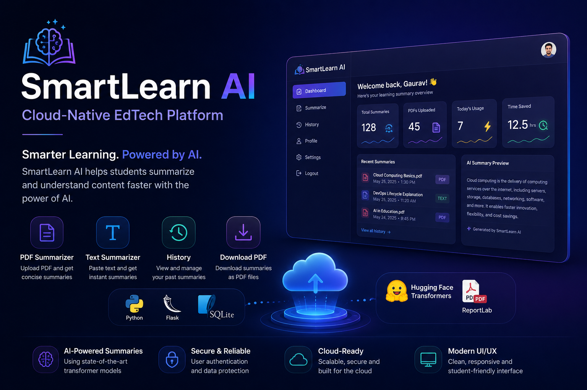

SECTOR A // 01
Island A: About HQ
Command observatory covering my background, education in Computer Science, engineering philosophy, and cloud career objectives.
// CLOUD INFRASTRUCTURE ARCHITECT
I build, automate, and manage scalable cloud infrastructure using Azure, Terraform, and modern DevOps practices. Transforming complex distributed systems into reproducible, resilient code.
Each floating sector represents a core pillar of my professional profile. Select an island to engage camera focus and explore deeper technical architecture.
Command observatory covering my background, education in Computer Science, engineering philosophy, and cloud career objectives.
Connected technical nodes across Microsoft Azure, Terraform IaC, GitHub Actions, Linux administration, Docker, and cloud networking.
Enterprise Azure infrastructure, automated Terraform CI/CD pipelines, SmartLearn AI, and live GitHub repository deployments.
Holographic achievement archive showcasing completed credentials in Azure, Terraform, Linux, and active containerization roadmaps.
Connected professional timeline from B.Tech computer science foundations to DevOps internship milestones and hands-on cloud labs.
Direct terminal for inquiries, working EmailJS transmission, verified contact channels, and instant resume download action.
Interactive architectural visualization of an enterprise Azure topology. Click any component to inspect its network boundaries, Terraform configuration, security controls, and source code.
Passionate Computer Science graduate dedicated to cloud infrastructure, automation, and building production-grade environments.

Azure & DevOps Engineer
"I believe modern engineering teams should never deploy manually what can be codified, versioned, and automatically tested."
As a Computer Science Engineering graduate, I have concentrated my engineering focus on Microsoft Azure, Terraform, Linux, and CI/CD pipelines. My goal is to simplify cloud complexity, establish strict security guardrails through Infrastructure as Code, and empower development velocity.
From authoring modular Terraform configurations to configuring automated validation in GitHub Actions, I continually test production patterns to ensure zero-drift, cost-conscious, and resilient architectures.
Every cloud resource must be declaratively version-controlled, tested, and automated via Terraform.
Security embedded at origin: strict NSGs, private endpoints, and scoped Azure RBAC access.
Eliminate human error by validating syntax, security, and plans before automated deployment.
Expanding from cloud foundations into Docker, Kubernetes/AKS, and enterprise cloud architecture.
Verified technologies and tools actively used in hands-on production and lab environments.
Production-conscious cloud architectures, Infrastructure as Code repositories, and automated CI/CD pipelines.

Architected and deployed a multi-tier Azure enterprise infrastructure using modular Terraform. Provisions isolated Virtual Networks, Subnets, Network Security Groups, Linux VMs, and Blob Storage for reproducible, automated cloud environments.

Built a fully automated CI/CD deployment pipeline using GitHub Actions to streamline Terraform workflows targeting Microsoft Azure. Enforces formatting checks, static validation, plan artifacts on pull requests, and automated deployment upon merge.

A cloud-native Learning Management System built with Flask, integrating generative AI to provide dynamic content recommendations and automated assessments. Engineered with containerization principles for rapid deployment.
Standardized, decoupled Infrastructure as Code modules for provisioning consistent Azure environments. Includes battle-tested modules for Virtual Networks, Subnet security associations, NSGs, and Linux Virtual Machines.
Azure & DevOps Engineer • Terraform • Linux
Verified technical credentials, formal training, and active cloud learning certifications.
Cloud Computing Fundamentals, Infrastructure Architecture, Virtual Networks, Compute, and Azure Administration.
Completed • VerifiedInfrastructure as Code concepts, state locking, reusable modules, provider configurations, and CI/CD automation.
Completed • VerifiedUbuntu system fundamentals, permission models, shell scripting, package managers, and automated task execution.
Completed • VerifiedContainer images, multi-stage Dockerfiles, microservice packaging, and container network isolation.
In Progress • Q4 2026Container orchestration, Pod lifecycles, Ingress controllers, Helm charts, and Azure Kubernetes Service.
Target RoadmapEnterprise YAML release pipelines, artifact feeds, automated security gates, and branch policies.
Active StudyProgressive milestone track from computer science foundations to hands-on cloud automation and DevOps engineering.
Collaborating on production cloud infrastructure and automation tasks. Designing and maintaining modular Terraform scripts for Azure Virtual Networks and virtual machines. Assisting with GitHub Actions CI/CD workflows, automated validation, and Linux system configuration.
Built foundational computer science expertise covering operating systems, computer networking, algorithms, and distributed systems. Transitioned from general software development to dedicated cloud architecture, containerization, and automated DevOps delivery pipelines.
• Successfully provisioned full Azure Enterprise Infrastructure via Terraform modules.
• Automated multi-stage GitHub Actions workflows for continuous Terraform plan & apply.
• Configured cloud deployments with Zero-Trust network security groups and state locking.
• Portfolio engineered and deployed to global edge via Cloudflare Pages and GitHub Actions.
Ready to connect for DevOps engineering roles, cloud infrastructure projects, or technical collaboration.
Direct communication channels to get in touch with me directly.
Complete resume detailing technical qualifications, Azure certifications, DevOps projects, education, and internship experience.
Download Latest ResumeSend an immediate message directly to my inbox via this integrated terminal form.